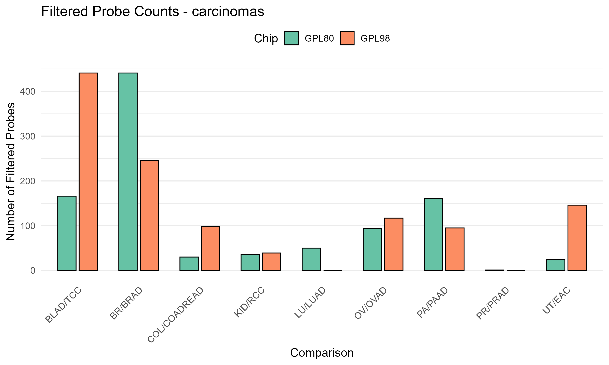
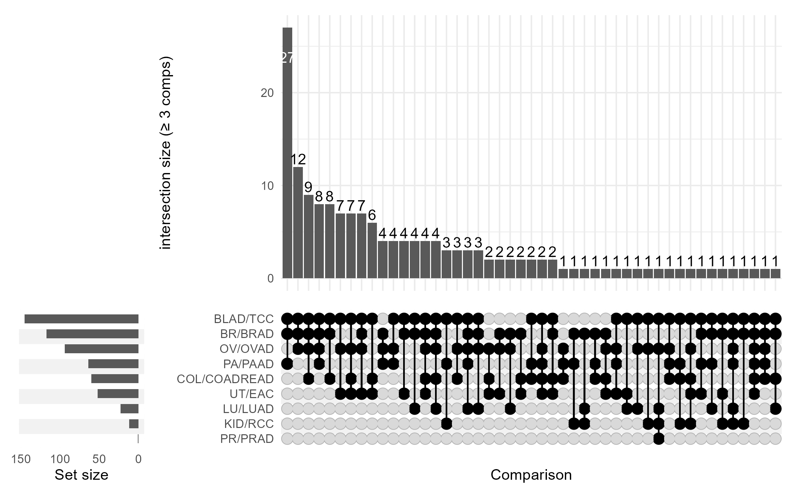
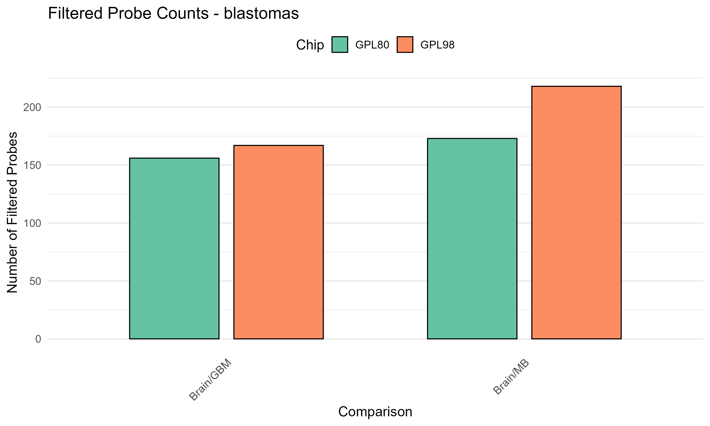
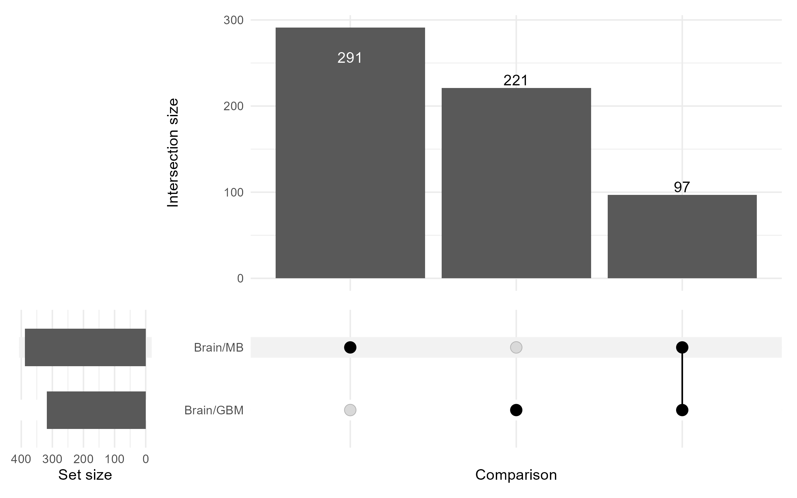
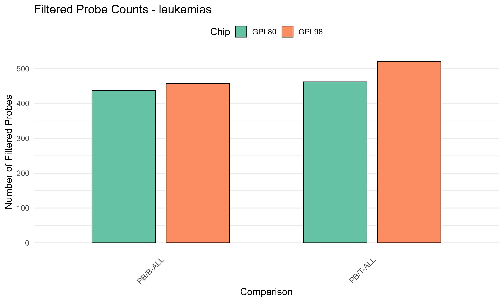
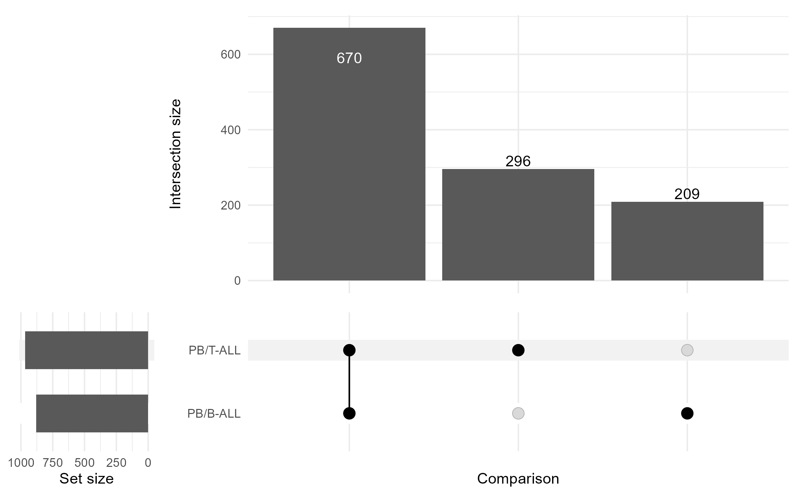
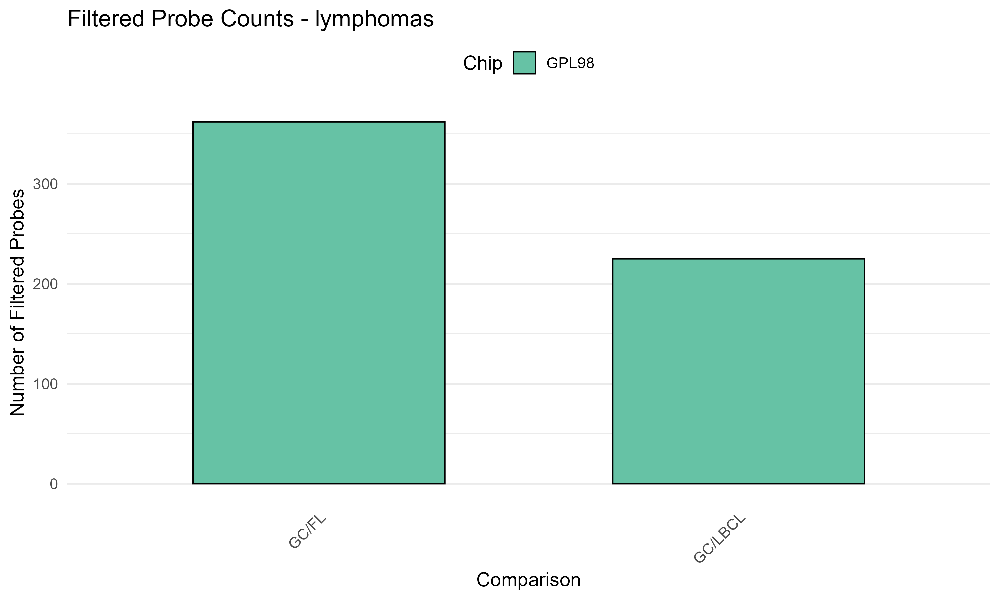
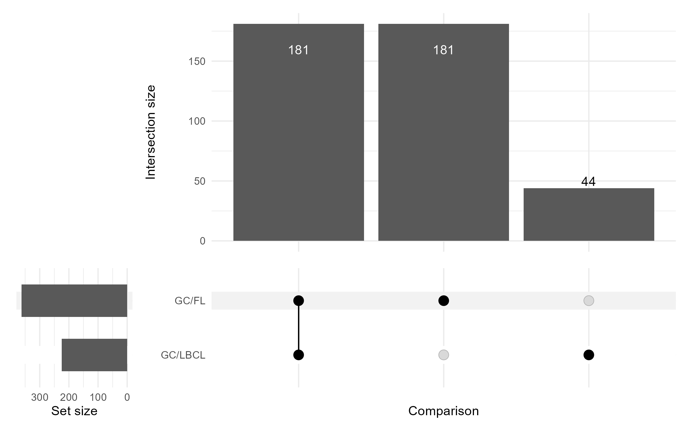

14 Structure and Overlap of Filtered Probe Sets
14.1 Overview
This section examines the empirical structure of filtered probe sets across comparisons using UpSet visualizations. These plots summarize the degree of overlap and uniqueness among probes retained under the configured filtering strategy.
In the current results, filtered probe sets were generated using limma-based pairwise differential expression filtering with the following parameters:
logfc_cutoff = 0.33 pval_cutoff = 0.05
Probe selection was performed separately for each normal/tumor comparison, and the resulting probe sets were analyzed across both microarray platforms (hu35ksuba and hu6800) to assess the degree of shared and comparison-specific signal.
The results should be interpreted as properties of the filtered feature space defined by limma-based pairwise contrasts, not of the full transcriptome. As established in the filtering framework, all downstream complexity, entropy, and latent-space analyses are computed within these comparison-specific feature sets.
Accordingly, the patterns observed here provide a structural context for interpreting subsequent quantitative results, including the extent to which filtered probe sets are shared across comparisons and across platforms.
14.2 Importantly, these results reflect one specific filtering regime. Subsequent analyses will examine alternative feature-selection strategies, including variance-based fixed top-N probe sets, to assess the sensitivity of feature-space structure and downstream metrics to the choice of filtering method.
14.3 Carcinomas


Carcinoma comparisons exhibit relatively limited overlap among filtered probe sets. Most probes appear in only a small number of comparisons, and shared intersections are generally modest in size.
This pattern indicates a fragmented feature-space structure, in which retained probes are largely comparison-specific under the current filtering configuration.
14.4 Blastomas


Blastoma comparisons show an intermediate level of overlap. While some probes are shared across multiple comparisons, a substantial proportion remain comparison-specific.
This suggests a partially shared feature space, with both common and distinct transcriptional components contributing to the retained probe sets.
14.5 Leukemias


Leukemia comparisons exhibit substantial overlap among filtered probe sets. Large intersections are observed across multiple comparisons, indicating that many probes are retained consistently across this category.
This pattern reflects a highly shared feature-space structure, in which a common set of probes contributes to multiple leukemia comparisons under the current filtering strategy.
14.6 Lymphomas


Lymphoma comparisons similarly display strong overlap among filtered probe sets, with large shared intersections across comparisons.
As with leukemias, this indicates a coherent feature-space structure, where retained probes are frequently shared rather than comparison-specific.
14.7 Summary of Structural Patterns
Across tumor categories, the structure of filtered probe sets varies substantially:
- Carcinomas: predominantly comparison-specific probe sets (low overlap)
- Blastomas: mixed structure with both shared and distinct probes
- Leukemias and lymphomas: strongly shared probe sets (high overlap)
These differences arise from the interaction of filtering criteria with the underlying expression structure, sample composition, and comparison design.
Importantly, these observations do not in themselves imply differences in biological complexity. Rather, they characterize the feature spaces within which complexity, entropy, and latent-space properties are subsequently evaluated.
14.8 Relationship to Downstream Analyses
The structural differences observed here provide important context for subsequent analyses:
- Complexity and entropy measures are computed over these filtered probe sets, and therefore reflect the dimensionality and covariance structure of these feature spaces.
- Latent-space representations are learned from feature sets that may overlap substantially or differ markedly across comparisons.
- Pairwise reports should therefore be interpreted with awareness of whether the underlying feature space is relatively shared or comparison-specific.
These considerations are especially relevant when comparing results across tumor categories or across filtering configurations.